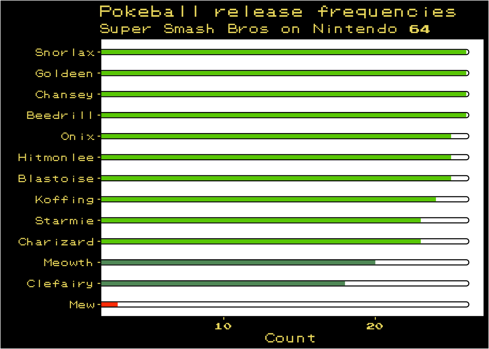

My special edition Nintendo 64 playing Super Smash Bros.
tl;dr
Pokémon emerge at different rates from the pokéball item in Super Smash Bros (N64). Also {Rokemon} can make fun Pokémon-themed plots.
Smash!
Super Smash Bros (SSB) is a series of beat ’em up videogames featuring characters from various Nintendo franchises and beyond. The twist is that your health doesn’t deplete; instead you build damage so that subsequent hits knock you back further.
You can fight characters directly but you can also make use of items and weapons from games across the Nintendo universe, such as the mushroom (the Super Mario series), the heart container (Zelda) and the home run bat (EarthBound).
One of the more interesting items in SSB is the pokéball. This item is used in the Pokémon series of games to capture and store Pokémon. When a player picks up and throws a pokéball in SSB, it opens to release 1 of a possible 13 Pokémon. The SSB wiki says that all of them are ‘common’, except for ‘uncommon’ Snorlax and ‘rare’ Mew (apparently only once every 151 releases, which is related to the number of Pokémon in the original game).
So how frequently in practice does each Pokémon emerge from a pokéball in SSB on N64?
This is a short post to sate my curiosity. I’ve used R code throughout. The post will update as I gather more data.
Data
I’m a recovering ecologist, so data collection by observation is very important to me. I watched four computer-controlled players face-off in versus mode (it’s a weekend and I’m old enough to do whatever I want (after I’ve done my chores)). Pokéballs were the only items set to ‘on’ and frequency was set to ‘very high’. I saved the file as a CSV on GitHub.
Of course we can plot these data a well. It seems fitting to have a Pokémon theme, so we can use the gghealth() function from the {Rokemon} package by David Schoch. This creates a bar chart where the bars look like the health point (HP) meter from the original Pokémon games on the Nintendo Game Boy.1
{Rokemon} has a function that imports the Pokémon font to use in its plots. Run import_pokefont() to install the pokemon-font.ttf font file to your machine. The path will be printed in your console. I’m running macOS, so I can copy this file into Font Book to make it available for use.
And now we can plot.
balls %>%count(pokemon) %>%gghealth("pokemon", "n") +labs(x ="", y ="Count",title ="Pokeball release frequencies",subtitle ="Super Smash Bros on Nintendo 64" )

Revelation
So it looks like the ‘common’ Pokémon according to the SSB wiki are indeed more common, though Snorlax appears equal first on this list, despite being labelled as ‘uncommon’. Clefairy also appeared less than expected, given it was labelled as ‘common’.
Mew appeared 3 times out of 290, which is once every 96.7 releases; less than the once every 151 releases I mentioned above.
Bear in mind that this is only based on a sample of 290 so far. I might collect more data at a later point.
I hope this inside information will help you win your next Smash tournament. You are welcome.